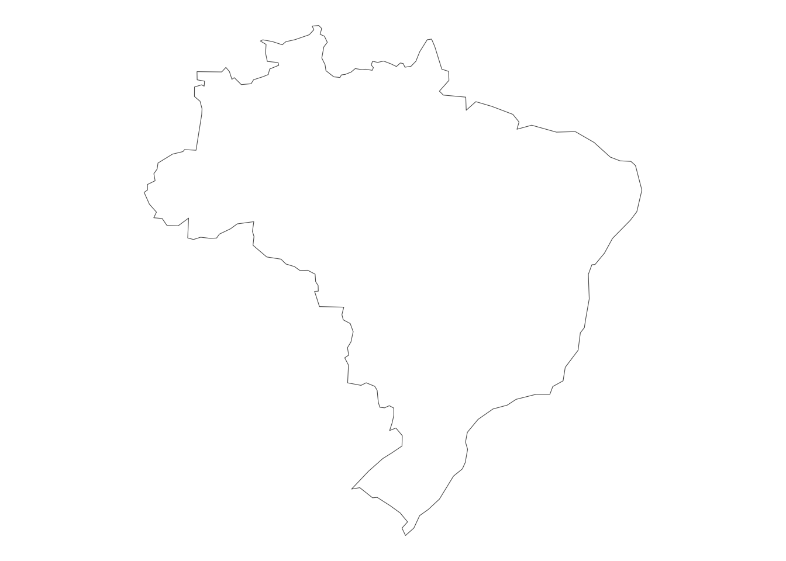
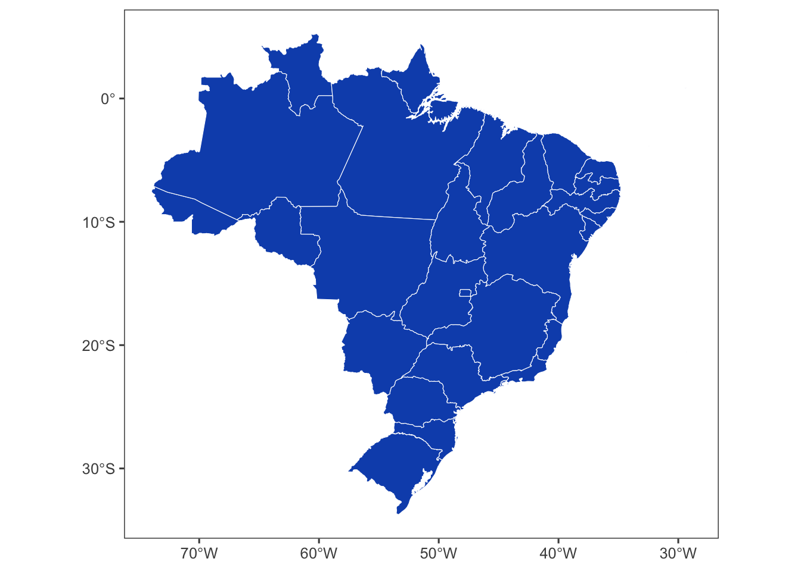
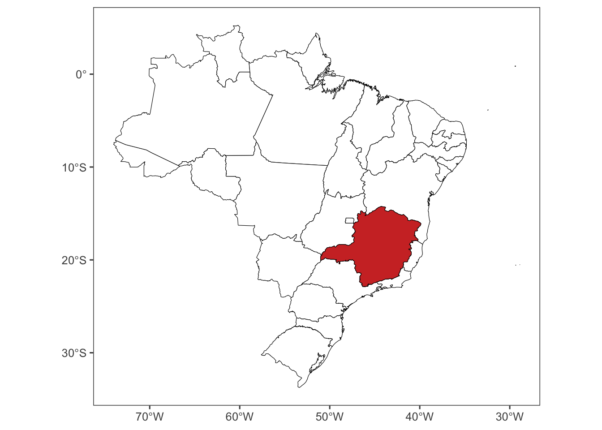
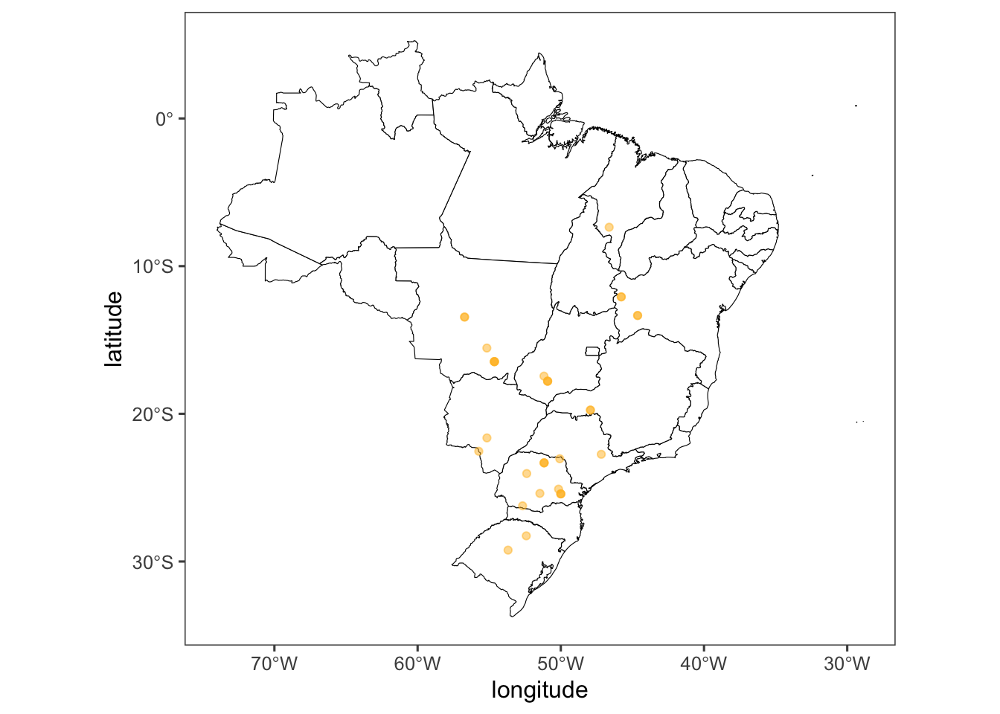
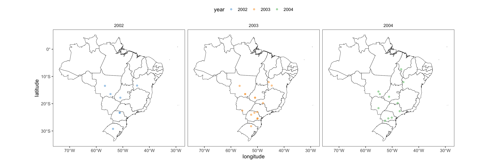
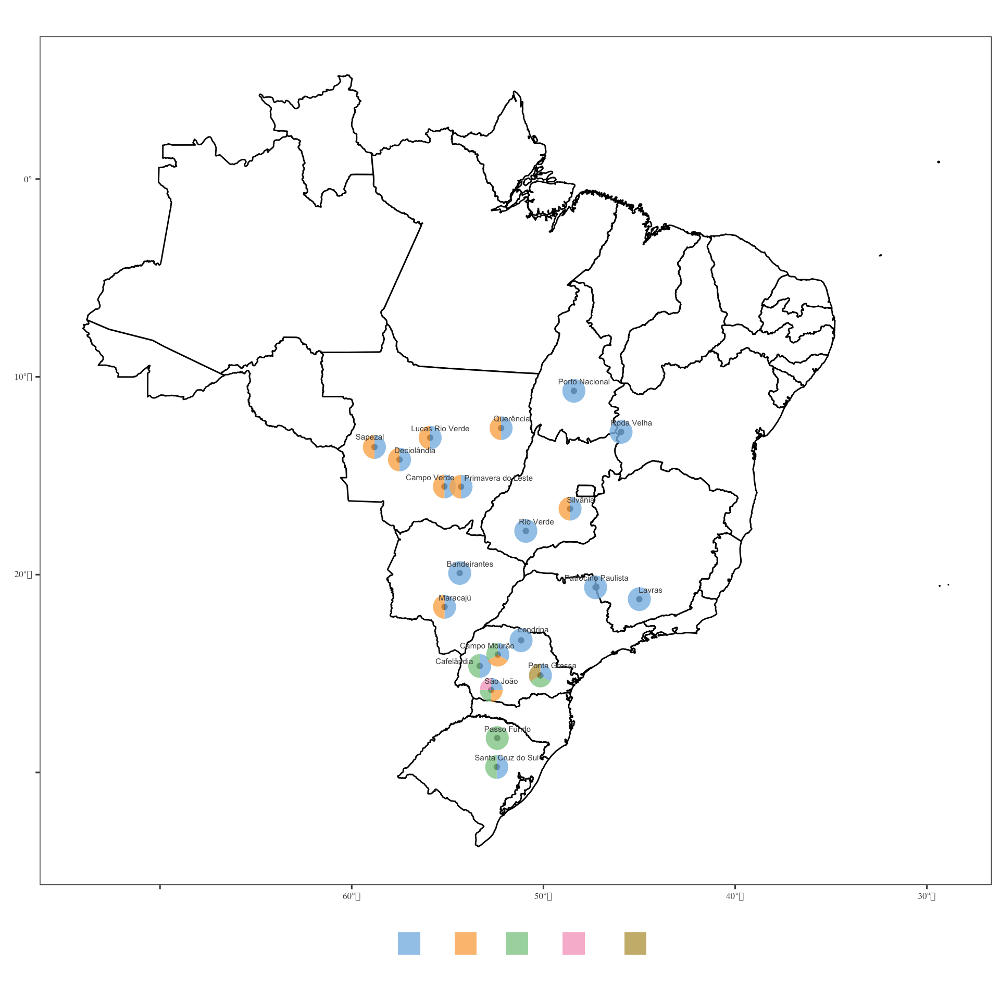
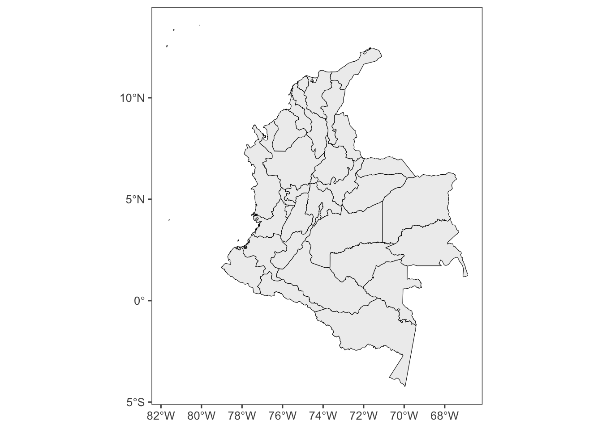
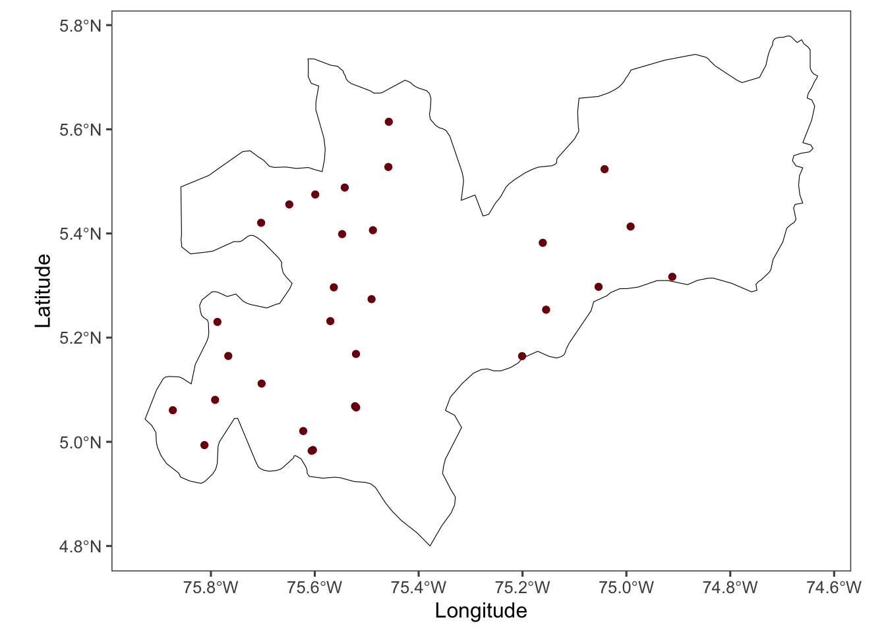

Es importante usar RStudio en la visualización de mapas por varias razones clave:
Integración de Paquetes Especializados: RStudio ofrece acceso a una amplia variedad de paquetes especializados para visualización geoespacial, como ggplot2, sf, rnaturalearth, entre otros. Estos paquetes están diseñados específicamente para trabajar con datos espaciales y geográficos, lo que facilita la creación de mapas precisos y detallados.
Flexibilidad en la Visualización: RStudio permite una gran flexibilidad en la personalización de mapas. Puedes ajustar colores, estilos, tamaños y añadir elementos decorativos como leyendas, escalas y anotaciones, todo ello con un alto grado de control sobre el diseño final del mapa.
Capacidad de Automatización y Reproducibilidad: Utilizando scripts en RStudio, puedes automatizar la generación de mapas, lo que facilita la reproducción de los resultados y la actualización rápida cuando los datos cambian. Esto es especialmente útil en entornos donde los mapas deben ser generados regularmente o en respuesta a cambios en los datos subyacentes.
Análisis Integrado: RStudio no solo se limita a la visualización estática de mapas. También puedes integrar análisis estadísticos complejos directamente con la visualización geoespacial. Por ejemplo, puedes visualizar patrones espaciales, realizar análisis de clusterización espacial o correlacionar datos geográficos con otros tipos de datos.
Comunidad y Recursos: R y RStudio tienen una comunidad activa y una vasta cantidad de recursos educativos y de soporte disponibles. Esto facilita el aprendizaje y la resolución de problemas cuando se trabaja con visualización geoespacial en RStudio.
En resumen, RStudio es una herramienta poderosa y versátil para la visualización de mapas debido a su capacidad para manejar datos geoespaciales de manera eficiente, su flexibilidad en la personalización y su integración con análisis estadísticos avanzados, todo ello dentro de un entorno que fomenta la reproducibilidad y el desarrollo colaborativo.
Paso 1: Cargar los Paquetes Necesarios
Primero, debes cargar los paquetes que utilizarás para manipular y visualizar los datos geoespaciales.
Codigo
# Cargar paquetes necesarioslibrary(tidyverse) # Para manipulación de datos y gráficoslibrary(readxl) # Para leer archivos Excellibrary(ggplot2) # Para crear gráficoslibrary(rnaturalearth) # Para obtener datos geoespacialeslibrary(rnaturalearthhires)# Para obtener datos geoespaciales de alta resoluciónlibrary(ggthemes) # Para temas adicionales de ggplotlibrary(ggspatial) # Para anotaciones espaciales como la rosa de los vientoslibrary(gsheet) # Para leer datos de Google Sheetslibrary(scatterpie) # Para gráficos de pastel sobre mapaslibrary(ggrepel) # Para etiquetas de texto con ajuste automáticolibrary(leaflet) # Para mapas interactivoslibrary(DT) # Para mostrar datos en tablas interactivas
Paso 2: Preparar los Datos para el Mapa del País
Vamos a utilizar el paquete rnaturalearth para obtener los datos geoespaciales de Brasil y luego visualizarlos con ggplot2.
Codigo
# Obtener datos geoespaciales de BrasilBRA <-ne_countries(country ="Brazil", returnclass ="sf")# Graficar el mapa de Brasilggplot(BRA) +geom_sf(fill ="white") +theme_void() # Tema minimalista

Paso 3: Plotear el Mapa del País con Estados
Para visualizar los estados dentro de Brasil, usamos la función ne_states.
Codigo
# Obtener datos de los estados de BrasilBRA <-ne_states(country ="Brazil", returnclass ="sf")# Graficar los estados de Brasilggplot(BRA) +geom_sf(color ="white", fill ="#0f52ba") +theme_few()

Paso 4: Seleccionar y Graficar un Estado Específico
Seleccionamos un estado específico, en este caso Minas Gerais, y lo resaltamos en el mapa.
Codigo
# Filtrar para obtener solo el estado de Minas GeraisMG <- BRA %>%filter(name_en =="Minas Gerais")# Graficar el mapa de Brasil con Minas Gerais resaltadoggplot(BRA) +geom_sf(color ="black", fill ="white") +geom_sf(data = MG, color ="black", fill ="#cf352e") +theme_few()

Paso 5: Plotear Puntos Específicos (Latitud y Longitud)
Si tienes datos de puntos específicos, como ubicaciones con coordenadas de latitud y longitud, puedes añadirlos al mapa.
Codigo
# Datos de ejemplo de puntos específicossbr <- RustSoybean# Mostrar datos en una tabla interactivasbr %>% DT::datatable(extensions ='Buttons',options =list(dom ='Bfrtip', buttons =c('excel', "csv")) )
Codigo
# Graficar puntos en el mapa de Brasilggplot(BRA) +geom_sf(color ="black", fill ="white") +geom_point(data = sbr, aes(longitude, latitude), alpha =0.5, color ="#ffbd2e") +theme_few()

Paso 6: Separar Fechas en Día, Mes y Año
Separar las fechas puede ser útil para análisis temporales.
Codigo
# Separar la fecha en día, mes y añosbr2 <- sbr %>%separate(planting, into =c("year", "month", "day"), sep ="-", remove =FALSE)# Mostrar datos en una tabla interactivasbr2 %>% DT::datatable(extensions ='Buttons',options =list(dom ='Bfrtip', buttons =c('excel', "csv")) )
Paso 7: Graficar Puntos con Colores por Año y Facetas
Podemos colorear los puntos según el año y crear facetas para cada año.
Codigo
# Graficar puntos coloreados por año y con facetas por añoggplot(BRA) +geom_sf(color ="black", fill ="white") +geom_point(data = sbr2, aes(longitude, latitude, color = year), alpha =0.5) +facet_wrap(~year) +theme_few() +scale_color_few() +theme(legend.position ="top")

Paso 8: Añadir Rosa de los Vientos y Escala
Para añadir una rosa de los vientos y una escala al mapa, usamos el paquete ggspatial.
Codigo
# Añadir rosa de los vientos y escalaggplot(BRA) +annotation_north_arrow(location ="bl") +annotation_scale(location ="br") +geom_sf(color ="black", fill ="white") +geom_point(data = sbr2, aes(longitude, latitude, color = year, size = severity), alpha =0.6) +facet_wrap(~year) +theme_few() +scale_colour_manual(values =c("#6aa84f", "#ffbd2e", "#cf352e")) +theme(legend.position ="top")
library(scatterpie)library(ggrepel)ggplot(BRA) +geom_sf(fill ="white", color ="black", linewidth =0.5) +coord_sf()+geom_point(data = mapa, aes(lon, lat))+geom_scatterpie(aes(x=lon, y=lat, r =0.6),alpha =0.8, color =NA, data = mapa,cols =c ("DFC","MA","FER","ANTR","OIDIO"))+geom_text_repel(data = mapa, aes(lon, lat, label = Local),size =2, nudge_x =0.2, nudge_y =0.27, color ='gray30', family ="Arial")+theme_few()+scale_fill_few()+labs(x ="Longitude", y ="Laititude", legend ="", fill ="Doença")+theme(legend.position ="bottom", text =element_text(family ="Arieal", size =8))

Ejemplo de Mapa en Colombia
Vamos a mostrar un ejemplo de cómo aplicar estos conceptos a otro país, en este caso, Colombia.
Conjunto de Datos y Plot del Mapa del País
Codigo
# Obtener datos de ColombiaCOL <-ne_states(country ="Colombia", returnclass ="sf")# Graficar el mapa de Colombiaggplot(COL) +geom_sf(color ="black", fill ="#eeeeee") +theme_few()

Seleccionar el Departamento de Caldas
Codigo
# Filtrar para obtener solo el departamento de CaldasCAL <- COL[COL$name_en =="Caldas", ]# Graficar el mapa de Caldasggplot(CAL) +geom_sf(color ="black", fill ="#7d0c0c") +theme_few()
# Graficar puntos de almacenes en el mapa de Caldasggplot(CAL) +geom_sf(color ="black", fill ="white") +geom_point(data = Almacenes, aes(x = Longitude, y = Latitude), color ="#7d0c0c") +theme_few()

Crear un Mapa Interactivo con Leaflet
Codigo
# Crear un mapa interactivo con Leafletleaflet(Almacenes) |>addTiles() |>setView(-72.0000000, 4.0000000, zoom =6) |>addCircleMarkers(~Longitude, ~Latitude, popup =~Almacen, weight =3, radius =2, color ="#7d0c0c", stroke =TRUE, fillOpacity =0.8)
Aprendizaje del día
Con esta guía, has aprendido cómo cargar datos geoespaciales, visualizarlos en mapas, y personalizar esos mapas en RStudio utilizando varios paquetes. Puedes aplicar estos conceptos a diferentes regiones y tipos de datos según tus necesidades.
Source Code
# Mapas en RstudioEs importante usar RStudio en la visualización de mapas por varias razones clave:1. **Integración de Paquetes Especializados**: RStudio ofrece acceso a una amplia variedad de paquetes especializados para visualización geoespacial, como `ggplot2`, `sf`, `rnaturalearth`, entre otros. Estos paquetes están diseñados específicamente para trabajar con datos espaciales y geográficos, lo que facilita la creación de mapas precisos y detallados.2. **Flexibilidad en la Visualización**: RStudio permite una gran flexibilidad en la personalización de mapas. Puedes ajustar colores, estilos, tamaños y añadir elementos decorativos como leyendas, escalas y anotaciones, todo ello con un alto grado de control sobre el diseño final del mapa.3. **Capacidad de Automatización y Reproducibilidad**: Utilizando scripts en RStudio, puedes automatizar la generación de mapas, lo que facilita la reproducción de los resultados y la actualización rápida cuando los datos cambian. Esto es especialmente útil en entornos donde los mapas deben ser generados regularmente o en respuesta a cambios en los datos subyacentes.4. **Análisis Integrado**: RStudio no solo se limita a la visualización estática de mapas. También puedes integrar análisis estadísticos complejos directamente con la visualización geoespacial. Por ejemplo, puedes visualizar patrones espaciales, realizar análisis de clusterización espacial o correlacionar datos geográficos con otros tipos de datos.5. **Comunidad y Recursos**: R y RStudio tienen una comunidad activa y una vasta cantidad de recursos educativos y de soporte disponibles. Esto facilita el aprendizaje y la resolución de problemas cuando se trabaja con visualización geoespacial en RStudio.En resumen, RStudio es una herramienta poderosa y versátil para la visualización de mapas debido a su capacidad para manejar datos geoespaciales de manera eficiente, su flexibilidad en la personalización y su integración con análisis estadísticos avanzados, todo ello dentro de un entorno que fomenta la reproducibilidad y el desarrollo colaborativo.## Paso 1: Cargar los Paquetes NecesariosPrimero, debes cargar los paquetes que utilizarás para manipular y visualizar los datos geoespaciales.```{r}# Cargar paquetes necesarioslibrary(tidyverse) # Para manipulación de datos y gráficoslibrary(readxl) # Para leer archivos Excellibrary(ggplot2) # Para crear gráficoslibrary(rnaturalearth) # Para obtener datos geoespacialeslibrary(rnaturalearthhires)# Para obtener datos geoespaciales de alta resoluciónlibrary(ggthemes) # Para temas adicionales de ggplotlibrary(ggspatial) # Para anotaciones espaciales como la rosa de los vientoslibrary(gsheet) # Para leer datos de Google Sheetslibrary(scatterpie) # Para gráficos de pastel sobre mapaslibrary(ggrepel) # Para etiquetas de texto con ajuste automáticolibrary(leaflet) # Para mapas interactivoslibrary(DT) # Para mostrar datos en tablas interactivas```## Paso 2: Preparar los Datos para el Mapa del PaísVamos a utilizar el paquete `rnaturalearth` para obtener los datos geoespaciales de Brasil y luego visualizarlos con `ggplot2`.```{r}# Obtener datos geoespaciales de BrasilBRA <-ne_countries(country ="Brazil", returnclass ="sf")# Graficar el mapa de Brasilggplot(BRA) +geom_sf(fill ="white") +theme_void() # Tema minimalista```## Paso 3: Plotear el Mapa del País con EstadosPara visualizar los estados dentro de Brasil, usamos la función `ne_states`.```{r}# Obtener datos de los estados de BrasilBRA <-ne_states(country ="Brazil", returnclass ="sf")# Graficar los estados de Brasilggplot(BRA) +geom_sf(color ="white", fill ="#0f52ba") +theme_few()```## Paso 4: Seleccionar y Graficar un Estado EspecíficoSeleccionamos un estado específico, en este caso Minas Gerais, y lo resaltamos en el mapa.```{r}# Filtrar para obtener solo el estado de Minas GeraisMG <- BRA %>%filter(name_en =="Minas Gerais")# Graficar el mapa de Brasil con Minas Gerais resaltadoggplot(BRA) +geom_sf(color ="black", fill ="white") +geom_sf(data = MG, color ="black", fill ="#cf352e") +theme_few()```## Paso 5: Plotear Puntos Específicos (Latitud y Longitud)Si tienes datos de puntos específicos, como ubicaciones con coordenadas de latitud y longitud, puedes añadirlos al mapa.```{r}# Datos de ejemplo de puntos específicossbr <- RustSoybean# Mostrar datos en una tabla interactivasbr %>% DT::datatable(extensions ='Buttons',options =list(dom ='Bfrtip', buttons =c('excel', "csv")) )# Graficar puntos en el mapa de Brasilggplot(BRA) +geom_sf(color ="black", fill ="white") +geom_point(data = sbr, aes(longitude, latitude), alpha =0.5, color ="#ffbd2e") +theme_few()```## Paso 6: Separar Fechas en Día, Mes y AñoSeparar las fechas puede ser útil para análisis temporales.```{r}# Separar la fecha en día, mes y añosbr2 <- sbr %>%separate(planting, into =c("year", "month", "day"), sep ="-", remove =FALSE)# Mostrar datos en una tabla interactivasbr2 %>% DT::datatable(extensions ='Buttons',options =list(dom ='Bfrtip', buttons =c('excel', "csv")) )```## Paso 7: Graficar Puntos con Colores por Año y FacetasPodemos colorear los puntos según el año y crear facetas para cada año.```{r, fig.width=15, fig.height=5, fig.fullwidth=TRUE}# Graficar puntos coloreados por año y con facetas por añoggplot(BRA) + geom_sf(color = "black", fill = "white") + geom_point(data = sbr2, aes(longitude, latitude, color = year), alpha = 0.5) + facet_wrap(~year) + theme_few() + scale_color_few() + theme(legend.position = "top")```## Paso 8: Añadir Rosa de los Vientos y EscalaPara añadir una rosa de los vientos y una escala al mapa, usamos el paquete `ggspatial`.```{r, fig.width=15, fig.height=5, fig.fullwidth=TRUE}# Añadir rosa de los vientos y escalaggplot(BRA) + annotation_north_arrow(location = "bl") + annotation_scale(location = "br") + geom_sf(color = "black", fill = "white") + geom_point(data = sbr2, aes(longitude, latitude, color = year, size = severity), alpha = 0.6) + facet_wrap(~year) + theme_few() + scale_colour_manual(values = c("#6aa84f", "#ffbd2e", "#cf352e")) + theme(legend.position = "top")```## Paso 9: adicionar un scatterpie```{r}mapa <-gsheet2tbl("https://docs.google.com/spreadsheets/d/1pAIFKsdKxk_UQQXdYwIO-O5NOkYNhpclImJcLziYnk4/edit?gid=50258992#gid=50258992")mapa |> DT::datatable(extensions ='Buttons', options =list(dom ='Bfrtip', buttons =c('excel', "csv")))``````{r,fig.width=10, fig.height=10,fig.fullwidth=TRUE}library(scatterpie)library(ggrepel)ggplot(BRA) + geom_sf(fill = "white", color = "black", linewidth = 0.5) + coord_sf()+ geom_point(data = mapa, aes(lon, lat))+ geom_scatterpie(aes(x=lon, y=lat, r = 0.6), alpha = 0.8, color = NA, data = mapa, cols = c ("DFC", "MA", "FER", "ANTR", "OIDIO"))+ geom_text_repel(data = mapa, aes(lon, lat, label = Local), size = 2, nudge_x = 0.2, nudge_y = 0.27, color = 'gray30', family = "Arial")+ theme_few()+ scale_fill_few()+ labs(x = "Longitude", y = "Laititude", legend = "", fill = "Doença")+ theme(legend.position = "bottom", text = element_text(family = "Arieal", size = 8))```## Ejemplo de Mapa en ColombiaVamos a mostrar un ejemplo de cómo aplicar estos conceptos a otro país, en este caso, Colombia.### Conjunto de Datos y Plot del Mapa del País```{r}# Obtener datos de ColombiaCOL <-ne_states(country ="Colombia", returnclass ="sf")# Graficar el mapa de Colombiaggplot(COL) +geom_sf(color ="black", fill ="#eeeeee") +theme_few()```### Seleccionar el Departamento de Caldas```{r}# Filtrar para obtener solo el departamento de CaldasCAL <- COL[COL$name_en =="Caldas", ]# Graficar el mapa de Caldasggplot(CAL) +geom_sf(color ="black", fill ="#7d0c0c") +theme_few()```### Base de Datos de Almacenes de Café en Caldas```{r}# Datos de almacenes de café en CaldasAlmacenes <- tibble::tribble(~City, ~Almacen, ~Latitude, ~Longitude, ~Origen, ~Distancia,"Aguadas", "Aguadas", 5.614441346, -75.45745866, "Manizales", 94L,"Anserma", "Anserma", 5.230185862, -75.78747373, "Manizales", 68L,"Aranzazu", "Aranzazu", 5.273885516, -75.4906769, "Manizales", 52L,"Arauca", "Arauca", 5.111797165, -75.70237449, "Manizales", 40L,"Belalcázar", "Belalcázar", 4.993657529, -75.8124391, "Manizales", 73L,"Chinchiná", "Chinchiná", 4.982784299, -75.60599158, "Manizales", 25L,"Chinchiná", "Express Chinchiná", 4.984223599, -75.60351371, "Manizales", 25L,"Filadelfia", "Filadelfia", 5.296549523, -75.56330843, "Manizales", 50L,"Florencia", "Florencia", 5.523442194, -75.0419965, "Manizales", 76L,"La Merced", "La Merced", 5.398797857, -75.54735513, "Manizales", 87L,"Manizales", "Manizales", 5.068354629, -75.52250821, "Manizales", NA,"Manizales", "Centro", 5.066015662, -75.52027854, "Manizales", NA,"Manzanares", "Manzanares", 5.253637095, -75.1546019, "Manizales", 106L,"Marmato", "Marmato", 5.474778144, -75.5991209, "Manizales", 92L,"Marquetalia", "Marquetalia", 5.297556319, -75.05356293, "Manizales", 133L,"Montebonito", "Montebonito", 5.164502404, -75.20083577, "Manizales", 74L,"Neira", "Neira", 5.168677095, -75.52064365, "Manizales", 21L,"Pácora", "Pácora", 5.527640673, -75.45833093, "Manizales", 108L,"Palestina", "Palestina", 5.020646532, -75.62224573, "Manizales", 31L,"Pensilvania", "Pensilvania", 5.382094679, -75.16095633, "Manizales", 138L,"Riosucio", "Riosucio", 5.420500318, -75.70330599, "Manizales", 94L,"Risaralda", "Risaralda", 5.164827869, -75.76656659, "Manizales", 54L,"Salamina", "Salamina", 5.406270495, -75.48804138, "Manizales", 75L,"Samaná", "Samaná", 5.413305395, -74.9918933, "Manizales", 172L,"Samaria", "Samaria", 5.231695042, -75.57004909, "Manizales", 44L,"San Bartolomé", "San Bartolomé", 5.488163145, -75.54230827, "Manizales", 100L,"San José", "San José", 5.080518037, -75.79193293, "Manizales", 68L,"Supía", "Supía", 5.45575962, -75.64910349, "Manizales", 82L,"Victoria", "Victoria", 5.316772447, -74.91163876, "Manizales", 136L,"Viterbo", "Viterbo", 5.060618313, -75.8733643, "Manizales", 72L)# Mostrar datos en una tablaAlmacenes```### Graficar Almacenes en el Mapa de Caldas```{r}# Graficar puntos de almacenes en el mapa de Caldasggplot(CAL) +geom_sf(color ="black", fill ="white") +geom_point(data = Almacenes, aes(x = Longitude, y = Latitude), color ="#7d0c0c") +theme_few()```### Crear un Mapa Interactivo con Leaflet```{r, fig.width=15, fig.height=15, fig.fullwidth=TRUE}# Crear un mapa interactivo con Leafletleaflet(Almacenes) |> addTiles() |> setView(-72.0000000, 4.0000000, zoom = 6) |> addCircleMarkers(~Longitude, ~Latitude, popup = ~Almacen, weight = 3, radius = 2, color = "#7d0c0c", stroke = TRUE, fillOpacity = 0.8)```## Aprendizaje del díaCon esta guía, has aprendido cómo cargar datos geoespaciales, visualizarlos en mapas, y personalizar esos mapas en RStudio utilizando varios paquetes. Puedes aplicar estos conceptos a diferentes regiones y tipos de datos según tus necesidades.